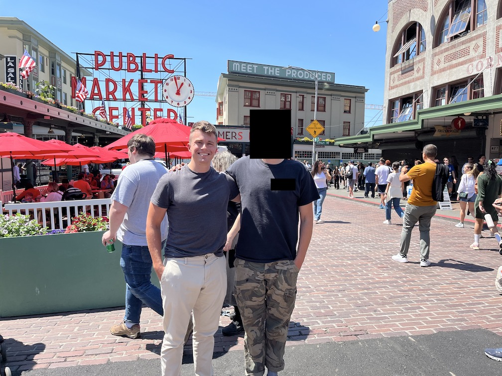
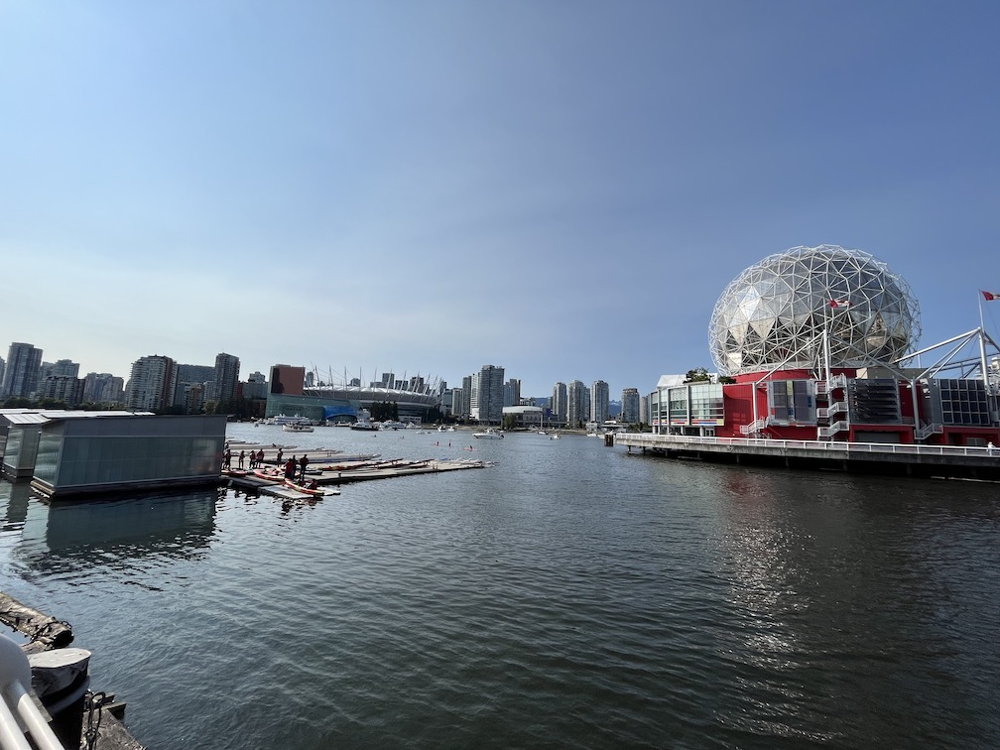
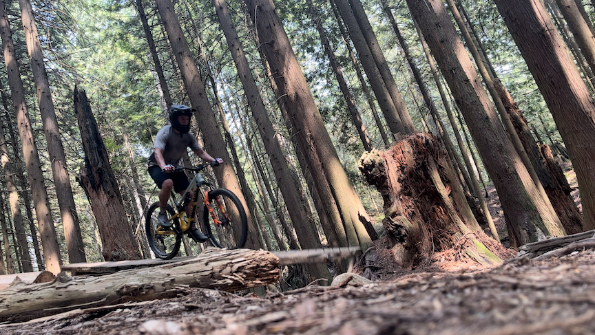
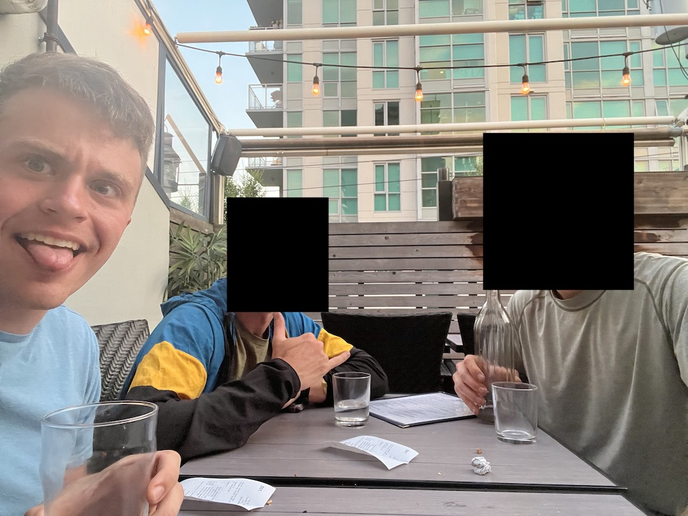
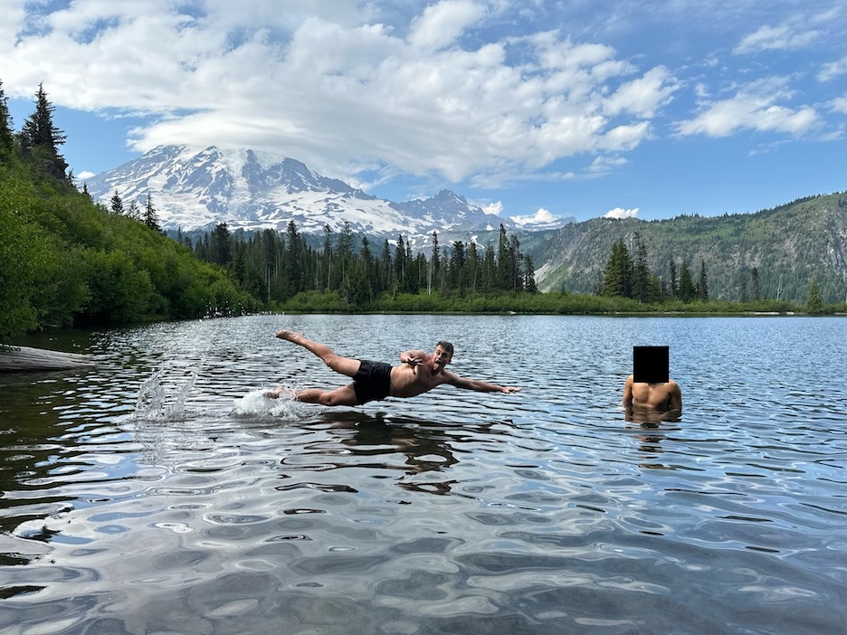
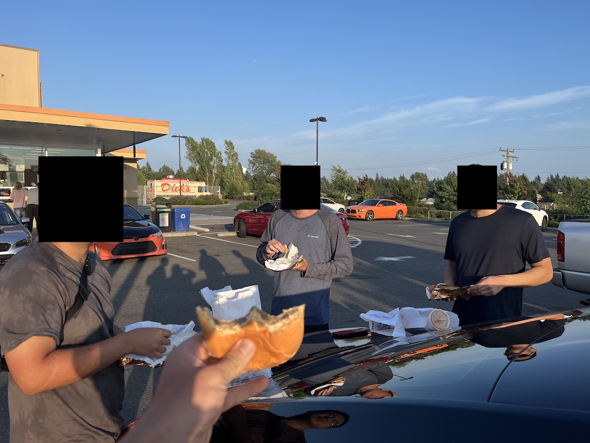
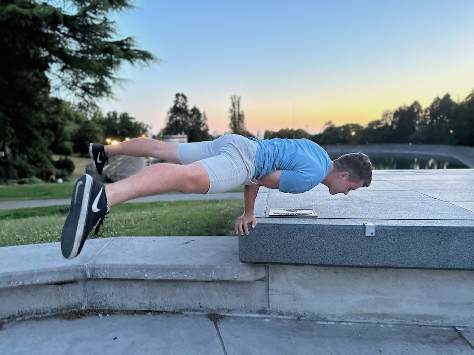
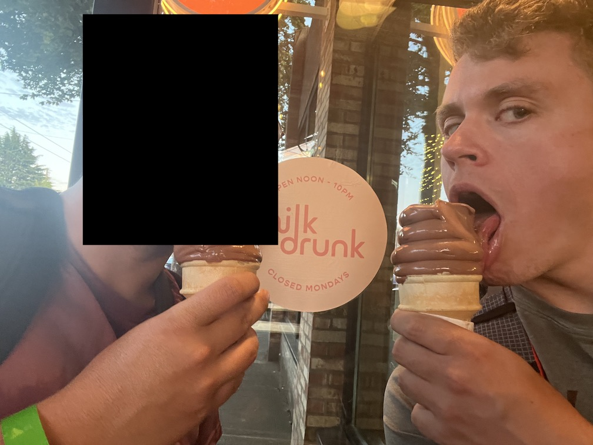

Vancouver and Seattle trip report from 03-10 July 2023.
My two roommates dropped by off at the airport at 6:00am after a meager four hours of sleep and I was at the gate in less than 10 minutes. The flight was uneventful and consisted of small talk with my seatmates and watching the original Fast and Furious movie.
My proactive research into the DFW-SEA flight path that made me book a starboard window seat paid off well with stunning views of Mount Rainier, Mount St. Helens, and all the forests and meadows surrounding those two. Even as we got closer to Sea-Tac the nature didn't slow down, the civilization was just embedded into it. There were ponds galore, tall trees, and just plain green everywhere for miles and miles. The difference between this and my concrete jungle of a metroplex was stark.
I took the light rail to University Street station and explored around while waiting for my cousin to get there. The other major difference between Seattle and my city? Elevation changes. Downtown Seattle is incredibly hilly. And they're not the gentle rolling ones most grandmas can get up. They're steep, abrupt, and punishing on both the lungs and legs alike. Throw on a heavy-ish backpack and some ill-advised pants and the sweat will quickly start.
I met Cousin at Pike Brewing, where I got a couple of beers and a fish sandwich, both overpriced in absolute terms but both right for the tourist hotspot we were in. He dropped me off at King Street Station a mile south so I could catch my bus up to Vancouver, driven by the most stereotypical Canadian I could think of.
Vancouver met me with all of its glory: beautiful mountains on the north side, a crazy homeless guy kicking and yelling at a poor, innocent fence, a nice public area with designated bike lanes and water area, and beggars galore. I grabbed a beer and bowl at CRAFT Beer Market False Creek before catching an Uber to my North Vancouver Airbnb and hitting the hay.
I was up early to go grab groceries at the local market, followed by a small tea and breakfast roll at a local chain. With my stomach full and body refreshed, it was time to pick up my bike from Endless Biking in downtown North Van. I'm pretty sure they immediately knew I was there for a rental given the beaming smile on my face when I walked in—I was radiating excitement as I chatted with the employees. They set me up on my Rocky Mountain Altitude and I was off.
This bike was super beefy compared to my Ibises with its 170/160 mm front/rear travel and 2.6 inch-wide tires. I think it heard me call it fat because the 550 ft worth of climbs back to the apartment were excruciating (but probably due to the steepness of hills, not the bike!). My tank was already halfway empty and I hadn't even hit the trails yet! I quickly downed some snacks and was off for the second installment of earn-your-downhill-via-horrible-climbs-you-aren't-used-to riding. I probably made a mistake by taking a detour to the Mt. Fromme trailhead in hopes of avoiding some climbing and steepness, but was met with a steep hiking trail I had to hike-a-bike.
I made it to the Fromme parking lot around noon and immediately recognized it from the years-worth of videos I had watched that featured it. It was here that it finally dawned on me: I was here. I was at the trailhead I had dreamt of coming to for 14 years now. I was about to ride and explore some of the world's best mountain biking trails. I had no more liquid to shed via tears so settled for a big grin as I started up the Fromme service road/mountain highway, the third unique installment of EYDVHCYAUT riding I would experience that day (although I would do it multiple times to shuttle).
The first trail I hit was Bobsled, a blue flow trail that's one of the first on the mountain. The dirt was perfectly smooth and maintained. The berms not too tight or loose. I was shouting incoherent noises of excitement as I blasted down, popping off lips where I could and quickly learning that my feet would easily come off the pedals if I wasn't careful (I normally ride clipped in). Good god, I now understood why people came from all over to ride the Shore, and that isn't even considered the best trail on Fromme!
Round 2 required pedaling up 1400 ft of elevation to literally the last trail on the service road, Seventh Secret. It was here that a second understand was quickly made: the level and danger of riding here was quite a bit higher than where I live. Seventh was incredibly steep in some spots, tight in others, and technical everywhere. A wrong move meant a long tumble or painful fall in most places. I could never get too much speed both because of how careful I was being and how much skill it required to get and maintain speed without crashing. I rode the massive log ride and most of the optional wooden features. When I exited my hands and forearms were wrecked, so I took a short break before continuing down...
Expresso (sic). Another flow and jump trail, this is like Bobsled's big brother. In case I had any doubts about my riding ability and the Shore's difficulty, this trail quickly dispelled both. Fast in some parts and slow in others, my speed graph would probably be a nice sine wave regulated solely by my brakes. There were jumps and drops and hucks and roots and rocks and skinnies and ladders. I finished with Lower Expresso and was shot out onto a neighborhood street, which was a sign from the biking gods that I should eat. I scarfed down a Hershey's Cookies 'N' Creme bar (don't judge, anything for energy at this point!) and a few other snacks before starting the fourth and final unique installment of EYDVHCYAUT riding back to the Fromme trailhead.
Round 3 was Floppy Bunny, a short black that is the first trail up the service road. Fun, but a bit too hucky and tight for my liking.
Round 4 was Pipeline, of which I don't remember much.
The fifth and final round of shuttling my ass up the mountain ended with Ladies Only, aptly described as "the definitive North Shore classic". This one I remember. Riding this was not too horrible until the last section. Holy Canadian cow this was steep. Possibly steeper (average of the course of the entire section) than anything I've ever ridden. I saw some lines, but were skeptical if they would even work. I immediately dismounted and gingerly carried the bike down, using its brakes to help. Looking back up confirmed just how steep is was.
The ride back was easy since it was all downhill. I hopped in the shower for a good while, laid down for 30 minutes to relax and figure out how the heck good riders got down the last section of Ladies, then texted some guys I met on the trail to see if they wanted to grab dinner.
I Ubered to downtown North Van and got a beer flight at House of Funk brewing. C and B hit me up that they were close, so I met them nearby at The Gull Bar and Kitchen. We chowed down hard and talked about rock climbing, mountaineering, riding, Veo scooters that are terrorizing their Calfornian city, travel plans, and much more. This evening reminded me that other travelers my age, solo or otherwise, are often open to meeting new people and hanging out. I will carry this with me in the future until I meet the wrong guy and get murdered in the woods.
My legs groaned as a got out of bed, immensely fatigued from yesterday's long, steep climbs. But I could not tire now, for I was off to explore (on foot) the Shore's most notorious, gnarly trails. I didn't have a set path, but Flying Circus (documentary here, walkthrough here) and GMG were definitely on my list. (Note: GMG's location is secret per the trailbuilders' request, so my path to get to the start is not told. Don't ask how I found the general area. Nothing I describe here is not out on the internet.)
I found an obvious trail around where I heard it was, so I figured "screw it, let's explore" and started down the path. I quickly found many spiderwebs awaiting an unsuspecting hiker, telling me people hadn't used this trail in sometime and instilling hope that maybe, just maybe, this was the right path. A flat, rocky trail quickly turned into incredibly steep loam, so steep that I had to scoot down on my butt or hold onto roots. From internet comments, this had to be it, no questions. When the trail forked, I took it in the direction that I suspect the main stunts to be. Eventually I ended up at [redacted], telling me I had taken the wrong fork somewhere.
I backtracked slightly and forced myself back through the same direction mentioned before, taking a shortcut that may have been a trail but probably wasn't but who knows because it was slightly worn and I'm decent at telling what is trail and what's not despite that probably not being a real skill.
And there it was. Amongst the foliage and between the trees as woodwork I recognized from pictures and videos I had obsessed over for years. I recognized the general area of where the stunts were. One of my childhood dreams had come true: I had discovered GMG.
But it wasn't in prime condition. All the wood was rotting, if not completely toppled over, a fragment of its former glorious self. I didn't care. This shit was crazy. I took pictures galore, then started the trek up to see where it started and to find more of the features. As it turned out, the original trail I went down wasn't that steep. It was GMG that was steep. Pictures won't do it justice so I won't post them, but my goodness, getting up some parts of the trail was ridiculous. And it just kept going and going and going and going. Eventually the trees became less dense or more sky was showing, telling me I was near the top. I found the start of the trail marked by [redacted]. The only thing I missed going up was the zig-zag skinny, so I headed back down a slightly different path to see if it was somewhere else. Nothing. I did see what I thought was it further [redacted], but the trail over there wasn't obvious, so who knows. I'm guessing it was off a mini-fork I missed somewhere while going up or the woodwork was so rotted that it wasn't obvious.
After Ubering back home, getting a snack, and taking a load off, it was off to ride. I made the colossal, kick-in-the-balls climb directly to the trailhead, this time choosing to hit some shorter trails. Bobsled was first to warm up on. I then hit Crinkum Crankum straight into Kirkford, two black trails connected together that were fairly technical and curvy. I made the long trek back up to Pile of Rocks (which, you guessed it, has a giant pile of rocks in front of it) and ended with Lower Oilcan. My hands and forearms were destroyed at the end. I had to stop a handful of times on Lower Oilcan to give them a break.
Dinner was at a local sushi restaurant followed by store-bought Chapman's ice cream, which is supposedly a top-tier Canadian brand. I'm sure Dad would have wanted me to eat three of those bars in one sitting.
I spent the first two hours of the day debating with myself whether I should ride or not. The angel (or devil, depending on how you look at it) told me "you've had two very long days of riding strenuous trails and you still have four more full days of vacation, one of which is a pretty demanding hike up the foothills of a mountain! Take it easy and rest up so you're prepared for Seattle". The devil, on the other shoulder, said "you're probably only coming here once in your life and you rented a pretty expensive bike. Future you will hate current you for squandering this precious time. Plus you'll be fine once you start riding".
I ended up listening to the devil and am very glad I did. Bobsled was the warm up yet again, but then I did some more exploring, this time starting with Air Supply, a jump trail in disrepair (much like the next two) running parallel to the service road. Jerry Rig intersected it quickly. The woodwork and jumps were stunning. Skinnies worked their way over impassable terrain, eventually leading to a massive double with a landing only a few feet from the next skinny. Better recovery quickly. I explored the upper [half? quarter? eighth??] on foot, marveling at the ingenuity and balls it took to build and ride a trail like this.
I continued on two wheels to Pink Starfish, just a few hundred feet ahead. While the skinnies and stunts weren't as hucky or jarring, it was still plenty technical, allowing me some fun on some parts and taking the easier option on others. The best part was it was still rideable and the past visible. I do wish I had instead went further down Jerry Rig, or at least pedaled back up to go down Jerry Rig. Sadly I wasn't able to find the famous banana log ride.
It saddens me how broken these iconic trails are. Much like my own home trails, the state of disrepair is like their history has been forgotten. No one rides them, no one speaks of them, no one works on them.
I hauled ass home to drop some stuff off, then dropped the bike off at the rental shop. I was thirsty as could be, which is perfect considering the well-regarded Bridge Brewing Company. I grabbed a couple of beers and a spicy sandwich while talking to the coolest Canadians I had met so far about Texan stereotypes, Mexico City, drugs, civil engineering, and music. Good times!
(I'll skip the boring part of Ubering back to my place, packing up, Ubering to the train station, waiting in line, and taking the Amtrak back down to Seattle.)
I ambled around downtown Seattle looking for F, only to find I had already passed him. Our paths crossed at the corner where a Fat Shack was, a sign from the heavens that we must eat there. And ate we did. I got a large Fat Shack sandwich: cheesesteak, chicken fingers, jalapeño poppers, mozzarella sticks, french fries, onion rings & honey-jalapeño mustard. If that isn't peak America I don't know what is.
We walked the lonely streets back to our hotel and met C and E, promptly going to bed after an exhausting day of traveling for all of us.
We were up early to snag our Turo car and make the two-hour drive to Mount Rainier National Park. I slept with E in the back while F and C navigated.
The road into the park was stunning, albeit densely covered by trees. The road cut through the trees and switchbacked up the foothills of the mountain itself, providing us the occasional glimpse of the 13,000-ft-prominent peak. We parked at the visitor center under a clear blue sky and began the Skyline Trail hike, a basic loop that gives beautiful views of Rainier and the surrounding landscape. My legs immediately began barking at me for the steep hills and steps, but eventually stopped whining and just began a dull ache. Whatevers.
Many shenanigans were had. We had a snowball fight in the first snowfield, raced across a stream with the condition that the loser buys the other a beer (I lost handedly due to a genius line choice by E), and slid on our butts down a steep snowfield. You are never too old to do childish things.
Our next stop were two lakes, Bench and Snow, 20 minutes south of the visitor center. As soon as I felt Bench's water I knew I had to jump in. I dove for it and was shocked at how refreshing it was! Slightly cool with the occasional cold or warm pocket, it felt great after a hot, sweaty day of hiking. We wrestled around in the water before deciding it wasn't cold enough and pushed onto Snow Lake for a truly frigid dip. My feet went numb after standing for a couple of minutes.
Dinner was at the renowned Dick's Drive-In, a Seattle staple known for their cheeseburgers, fries, and shakes, all of which I got after both my stomach and some other customers in line recommended it. A solid 6/10, with an extra point added because I was particularly hungry. Sorry, Seattle, but Braum's is still better.
We headed back to the hotel and I crashed with C while E and F went out on the town.
Pike Place Market was our first stop of the day. We meandered around the stalls, taking in the sights and smells and dodging flying fish being thrown from person to person. A breakfast scrambe was had at Bacco Cafe before catching the ferry to the neighboring Bainbridge Island.
A quaint, quiet town just across the sound from Seattle, this felt like the type of place that high-up tech bros (now tech grandpas) go to retire in peace. Houses were very New England-y and it gave small town, nothing-bad-ever-happens-here vibes. We walked up and down the main street and decided to head to the beach for some romantic walking and uninterrupted sunshine.
The ferry dropped us off just next to a hot dog stand, so I had to snag a Seattle-style dog, "a hot dog topped with cream cheese and sautéed onions and served in a pretzel bun". So good.
Next stop was taking the light rail to the Capitol Hill station, which is directly next to where CHAZ (Capitol Hill Autonomous Zone) used to be (CHOP, CHAZ, call it what you want). Respectfully speaking, I now understand that the reason that park was chosen was because of how progressive the surrounding area was and still is. We had a couple of sushi rolls at Star Sushi & Bar before walking north to Volunteer Park. We came up behind the theater, where a live Othello performance had just finished. What the heck? This city is nature-y and has free live Shakespeare plays in the park on Saturdays?? I mean, sure, I doubt I'd actually go, but having the option is everything, something I don't get (or at least don't hear of, which may actually be the bigger thing) in my city. The park offered a vantage point with an excellent view of the city, so I naturally did some of my gymnastics moves for the pics and headed out immediately afterwards.
After checking out and giving our luggage to the clerk to hold, we were off to catch a bus north to Kerry Park, stopping along the way to grab a small breakfast and tea at a local cafe.
The views at Kerry were even better than Volunteer, which may or may not have had something to do with the path to get there being way steeper. It was finally time for my dream at that point: ride a Veo scooter. My two Californian friend had hyped them up so much with their talk of Veo terrorism and how fast they went that I had been giddy with excitement ever since. With the app downloaded and no helmet in sight, it was time to shred...at 15 miles per hour. Weak!
After a alcohol-filled Thai lunch, Discovery Park was up next. We walked on the trails in the warm afternoon sun to the lighthouse on the edge, coming out to dozens of people enjoying the same clean, salty Sunday air as us.
With many hours to kill before needing to head back to the airport, F and I looked around the south of Seattle for restaurants, eventually deciding on Milk Drunk, a chicken and soft-serve joint in Beacon Hill. Super delicious, highly recommend.
The airport experience sums up the writing here: I'm tired of it and want to finish and go do something else. My flight left at 12:45am, landed at 6:45am, and I started working at 8:00am. Gotta maximize that PTO!
Canadians are nice. Like super nice. I had a single bad interaction while in Vancouver out of 20-ish in total. Everyone said please, thank you, and was just all-around joyful and kind.
One of my favorite things to ask locals while we shuttled up Fromme together was "what do you think of Texans?" It was here that I learned that Canadians think Texans are fat and love guns (in fairness, both are close to true (obesity is at 35%, gun ownership is at 46%). Buc-ee's is also known by at least one Canadian (who has family in Houston, but still pretty funny).
Time and time again I read or hear about the best way to get better at something is surround yourself with the people and environment that promotes getting better. And up until now, I don't think I truly appreciated that.
These trails were freaking difficult. A term I heard from a local was they call these "North Shore blacks" as opposed to other places just being regular blacks. There are no trails remotely close to how difficult these were that are close enough for me to train on regularly, meaning I am effectively barred from some of the more difficult Shore trails unless I literally move. I saw throngs of kids of all ages riding up Fromme for their mountain biking day camp.
Some of the best riders in the world come out of eastern British Columbia: Simmons, Semenuk, Messere, Sorge, etc. I'm largely convinced it's because they have some of, if not the, best training grounds in the world to hone their craft on and expert riders already there to train with.
{kind=link}